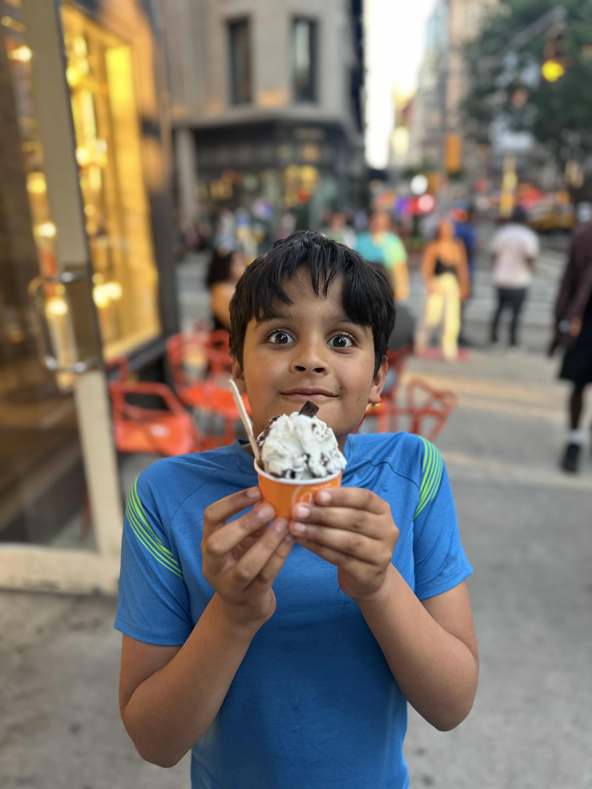

Hi, I'm Oliver — I'm eleven, I live in New York, and I'm eating my way across the city one beautiful plate at a time. Sushi, noodles, seafood pasta… if it's made with care, I want a bite.

Eleven years old, a fork in one hand and a notebook in the other.
I started paying attention to food the way some kids watch sports — I want to know why a dish is great.
For me it's never just about being full. It's the way a plate looks, the crunch, the temperature, the little surprise in the middle. A good dish feels like someone cared, and I can always taste it. that's the magic ✦
So I'm starting here: writing down everything I try around New York, scoring it honestly, and getting ready to bring you along on video. Pull up a chair.
Sushi, every single time. Clean, simple, perfect.
The science of a slow, soft scramble.
Anything from the sea — crab, lobster, clams, caviar.
New York City — the best tasting menu on Earth.
The dishes I'd happily eat for the rest of my life.
Where it all begins. Rice that's still a touch warm, fish that tastes like the ocean, and nothing getting in the way.
the dream ✦Ramen, udon, hand-pulled, chilled — I love how a bowl of noodles can be cozy and exciting at the exact same time.
slurp-approvedA soft scramble or a perfect French omelette is the hardest easy thing in cooking. I respect anyone who nails it.
deceptively trickySweet, buttery, a little bit of a project to eat. Worth every messy second. Bring extra napkins.
worth the messTiny things, huge flavor. A briny clam or a spoon of caviar tastes like the whole sea in one bite.
fancy & I love itMy favorite mash-up: silky pasta plus everything good from the ocean. Linguine alle vongole is basically a love letter.
desert-island dishHonest notes from a hungry eleven-year-old. Scored in chopsticks, out of five.
The rice was still warm and it almost fell apart in the best way. The uni tasted like the sea on a really good day. I closed my eyes for this one.
Broth so rich it coated the spoon. The noodles had a perfect chew. Took off half a point because it cooled down faster than I could eat it — and I eat fast.
The clams were tiny treasure chests. Garlicky, a little spicy, a little lemony. I used the bread to get every last drop and I'm not even sorry.
Soon I'll be filming the whole thing — walking you into the restaurants, showing you the dishes up close, and telling you exactly what I think. No script, just an honest, hungry kid. Want to know the second the first episode drops?